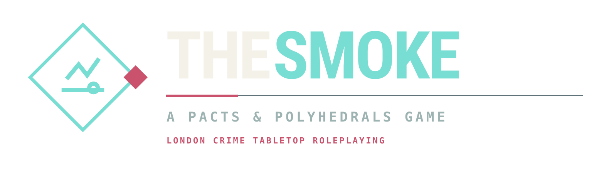
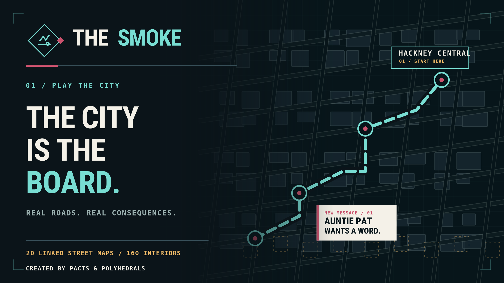

12 factions & 125 jobs
Build reputation, renown and influence across rival organisations, local opportunities and the opening Chainring campaign.

Work the Borough. Make Your Name.Start under the railway arches. Take jobs, nick motors, run deliveries, work with pirate radio, spray your name across the borough and try to stay a step ahead of the filth.
Not a standalone video game: The Smoke is a tabletop roleplaying game system for Foundry VTT.
The streets are mapped. The favours are never free. The city reacts to who you cross and who owes you.
Build reputation, renown and influence across rival organisations, local opportunities and the opening Chainring campaign.
Based on North and East London, with routes, locations and traversable streets. Taxi travel and GM-controlled vehicle fast travel are supported.
Drive, board, work shifts and survive the consequences of high-speed trouble, witnesses and police Heat.
Get jobs and contacts, tune to live stations, follow directions and keep an eye on your London day.
Take commissions, find venues and work through a persistent city of competing interests.
The beta has working systems but gameplay, updates and hosted-client behaviour still require real-world testing.



Promotional interface renders based on The Smoke. Live features and station availability may change during beta.
01 · Founders Beta — $5
First 100 paid supporters; beta updates and a separate $15 full-release upgrade.
02 · Expanded Early Access — $15
Starts only after a manual admin switch; beta updates and a separate $15 full-release upgrade.
03 · Full Release — $30
New customers pay $30. Existing beta buyers upgrade for $15, with discounts enforced in their account.
Changes between stages require administration. Existing entitlements survive stage changes.
Report bugs, broken chases, world/GM-client issues, unclear character options and anything that deserves a better street-level fix. Feedback tickets are private to purchasers and the publisher.
BETA FEEDBACK PORTALUse the email address you want attached to your purchases. We send a 15-minute, single-use link. The same verified email gets you back into My Library later, without buying again.
The login service must be configured before it can send links. Essential purchase emails are separate from optional marketing.